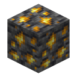
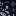
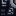
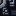
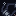
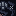
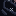
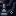
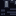
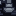

Chrono Ore#

Chrono Ore
chrono:chrono_ore
Drops a Timeclock Gear. Mining it can slow you down, gray you out or rewind the area around you.
- How to get it
- Small veins below Y 48 in the Overworld. Needs a diamond pickaxe.
- Category
- Blocks

Deepslate Chrono Ore
chrono:deepslate_chrono_ore
The deepslate version of Chrono Ore. Same drop, same time hazards.
- How to get it
- Chrono Ore veins in deepslate.
- Category
- Blocks
Veins of 2 below Y 48 (more common lower down) in every Overworld biome, about one vein per 24 chunks. Needs a diamond pickaxe and drops a Timeclock Gear. The time inside it leaks when you dig: there's a 10% chance you get slowed, a 10% chance you go gray, and if you mine it in under 3 seconds a 20% chance the area within 8 blocks rewinds 4 seconds.
Maltruant's Area#
A small deepslate ruin with a Time Beast waiting in it. It generates on the surface in the biomes where  Alien Evolution's Galvan capsules
land, roughly one per 80 × 80 chunk region. It's the most reliable place to find Time Beasts.
Alien Evolution's Galvan capsules
land, roughly one per 80 × 80 chunk region. It's the most reliable place to find Time Beasts.
Maltruant Altar#
A blackstone and deepslate shrine with banners, skulls, chests and all twelve murals built in. It generates once per world, 2,000 to 4,000 blocks out, along with the five fragments. This is where you summon Maltruant.
Ancient Chrono Murals#
Twelve carved blocks that tell the Chronosapiens' story. They're part of the altar and drop themselves when broken. Collect all twelve for Chronicle Curator. Murals I to IV, V to VIII and IX to XII each make one picture, two blocks wide and two high.










Aged Blocks#

Aged Block
chrono:ash_block
A block that aged in an instant and crumbles away. Blocks that never change over time aren't affected.
- How to get it
- Left behind by Time Beasts and Maltruant's summoning.
- Category
- Blocks
Time Beasts, temporal rays and Maltruant's arrival age the blocks around them. Blocks tagged chrono:
(bedrock and the like) never age.
Dimensions#
chrono: and chrono: are empty bedrock worlds the mod uses for Maltruant's
combat testing. You don't need to go there.